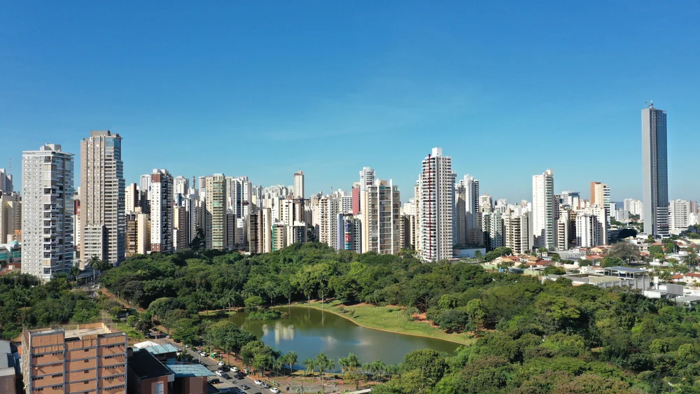

Goiás é conhecido por sua forte produção agropecuária, principalmente soja, milho e criação de gado. Sua capital, Goiânia, destaca-se pelo planejamento urbano e qualidade de vida. O estado possui grande importância econômica no agronegócio brasileiro e também apresenta riquezas naturais, como cachoeiras e áreas de cerrado preservado. A cultura goiana valoriza a música sertaneja, festas religiosas e culinária típica, como o pequi e a pamonha.
